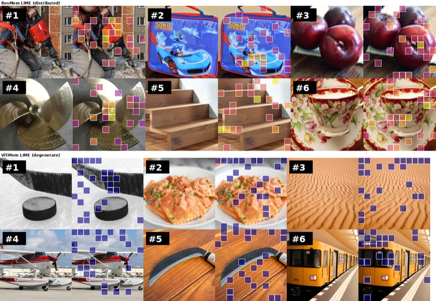

Humans Remember People; Models Remember Pixels: Exposing Blind Spots in Visual Memorability Prediction Poster
Conference on Cognitive Computational Neuroscience (CCN) · 2026
Two widely used memorability predictors track pixel-level colour and frequency statistics rather than the people and scenes humans actually remember — imperceptible perturbations move their scores far more than the presence of a person does.